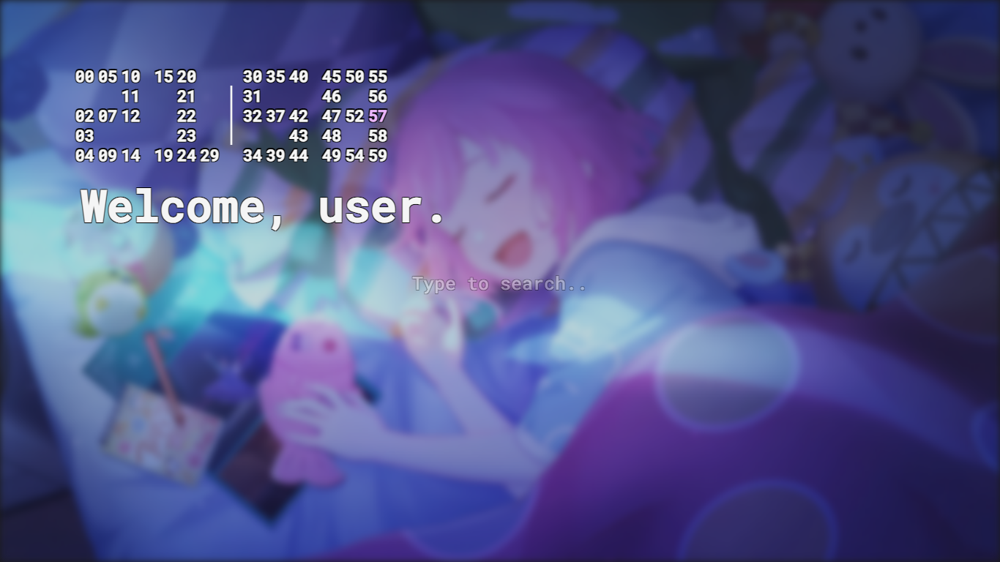
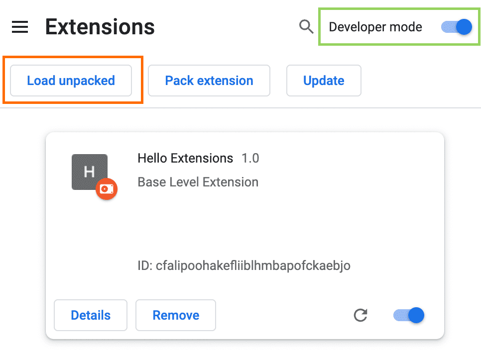

deceithome
View on GitHub
01
Overview
A Chrome extension that replaces your new tab page with a clean, minimalistic dashboard — built to be fast, quiet, and fully yours to configure.

02
Features
- Digital and analog clock
- Welcome message
- Working search bar with URL detection
- Search focus mode
- Search suggestions
- Shortcuts — your own pinned tiles, not a bookmarks mirror
- Customizable background
- Customizable themes and accent colors
03
Installation
Download the latest release, then load it as an unpacked extension: open chrome://extensions, enable Developer Mode, and select "Load unpacked" on the extension directory.
